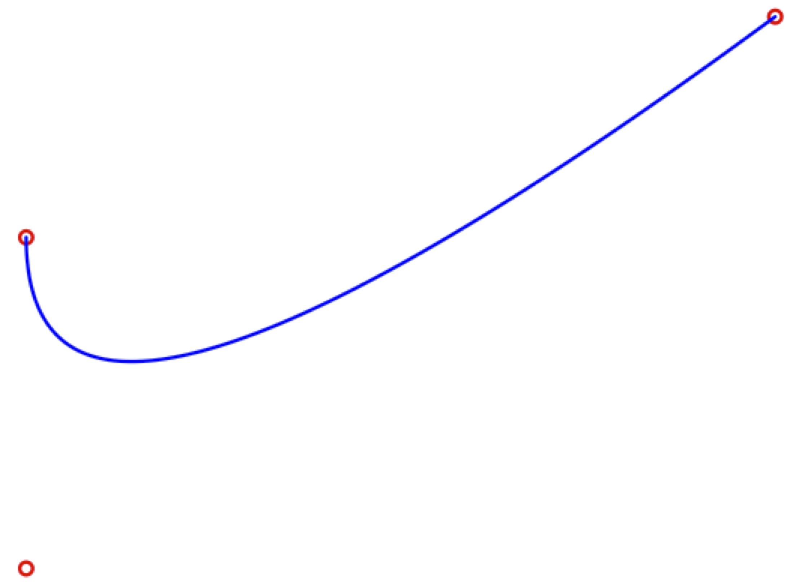
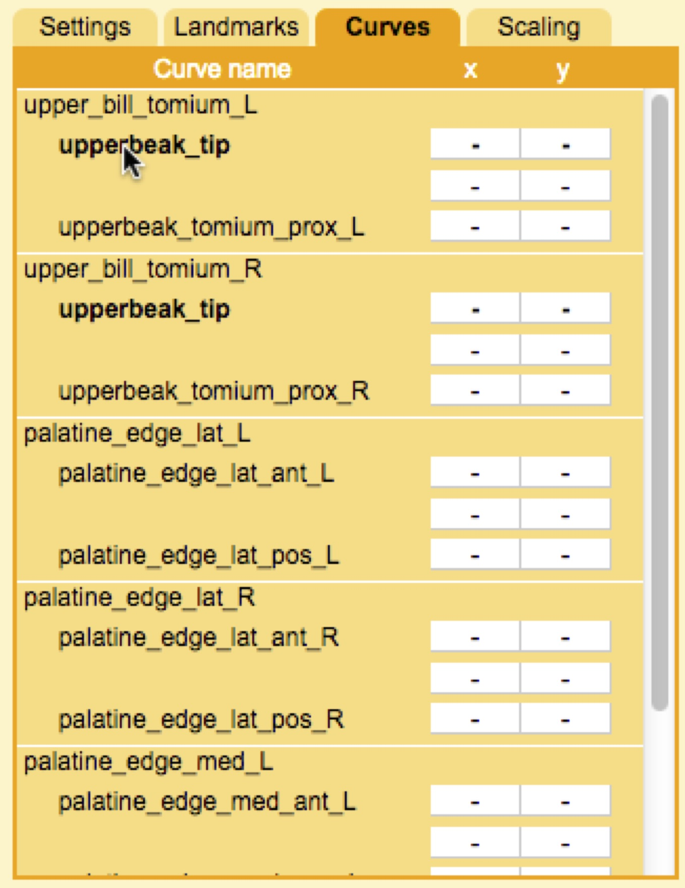
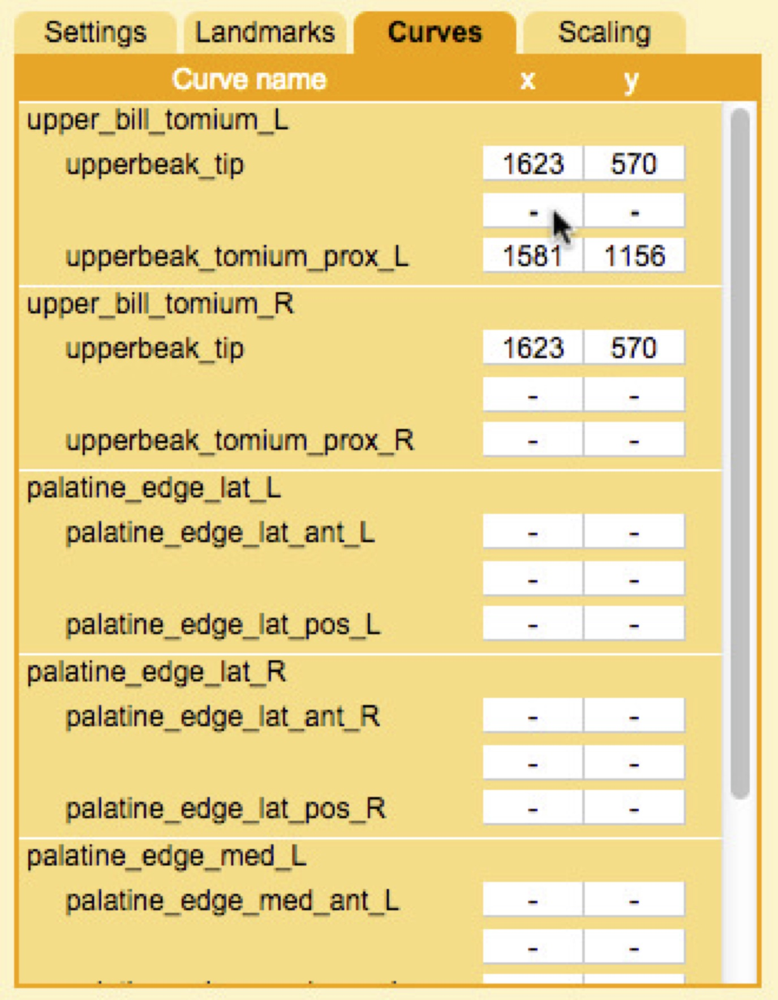
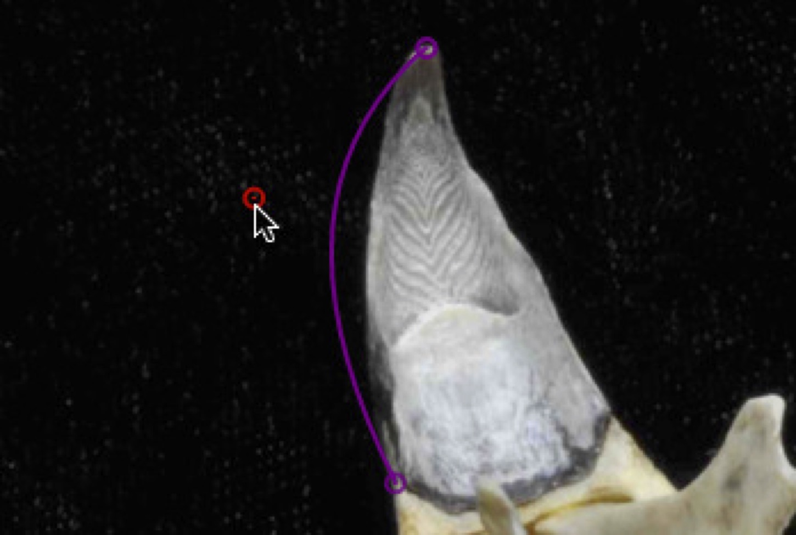
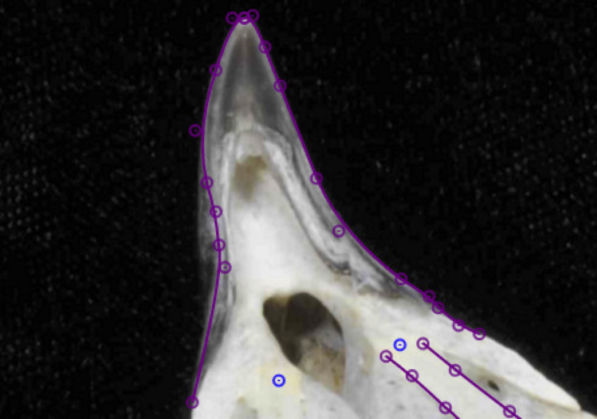
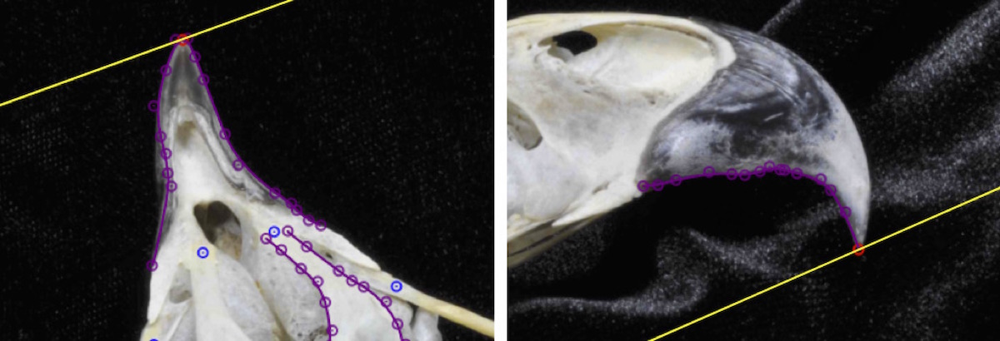
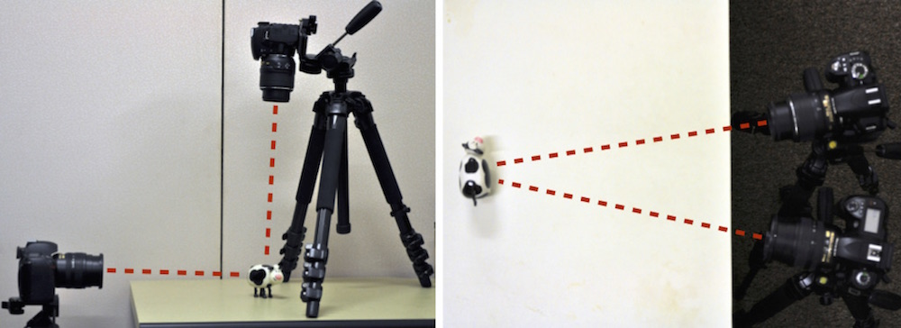

7.4 Digitizing curves
The digitizing app allows you to digitize curves using Bézier curves. Bézier curves are constructed from a series of control points. Two control points at each end of the curve determine its start and end point. Control points in between control how the curve bends away from a straight line between the start and end point.
The digitizing app only uses quadratic Bézier curves (3 control points) but an unlimited number of these curves can be stringed together end-to-end as Bézier splines. This allows a user to quickly and accurately fit a curve to a feature in an image.
To add a curve, click on the Curves panel at the right. You'll see a list of all the curve names to the far right. Below each curve name are the start and end points specified in curves.ref. These start and end points are treated the same as landmarks in the digitizing app (they are added to the list in the Landmarks panel if not already listed in landmarks.ref). Select the first landmark of a curve by clicking on the corresponding row.
Position the curve start point on the image by double-clicking as described previously for Digitizing landmarks. Then select the curve end point and position this at the end of the curve. Now all that remains is to "fill in" a curve between these points. Select the empty row (with "-"'s) between the start and end point. These are the intermediate control points that will be used to define the Bézier spline.
Add this point somewhere between the start and the end by double-clicking on the image. Note that the curve doesn't pass through this point, it only "reaches" toward it. You can change the shape of the curve by click-and-dragging this point.
For most curves a single intermediate point will probably not be enough to fit the shape well. Once you add an intermediate point a new empty row will open up below the current point in the Curves panel. Select this point and position it somewhere near the curve. The curve will end at that intermediate point so select the next empty row and add another intermediate point (for five points total, including the start and end). Note that as you add control points they alternate between points that the curve "reaches" to and points that the curve passes through; these are Bézier curves lined up one after another to form a Bézier spline.
Repeat this, adding additional intermediate points until you have a sufficient number of points to fit the natural curve. To move back and forth between curve points on a particular curve without having to click the rows in the Curves panel you can use the keyboard shortcuts 'n' and 'p', for next and previous, respectively. Just make sure that the curves are always complete (the total number of control points must be odd). If the curve doesn't extend continuously between the start and end landmarks then you'll either need to add or remove one intermediate point. With a sufficient number of intermediate points you should be able to fit a spline to pretty much any natural curve.
If you are collecting curve data there is an additional consideration that will effect the success of the curve reconstruction. The accuracy of the curve reconstruction can vary depending on the orientation of the object within the calibration volume. If you understand a bit about how the curve reconstruction relates to the epipolar line then you can find an orientation that will afford you the most accuracy.
Stereo reconstruction requires corresponding points between different views. Curves complicate this a bit because while the first and last point are clearly corresponding, how do the points along one curve correpond to those along the other? You might think it would be as simple as matching points that are at same relative position along each curve's length (i.e. a point halfway along one curve corresponds to a point halfway along the other). This turns out not to be the case because of how the different views distort the projection of the curve onto the image plane.
To solve this problem, StereoMorph identifies corresponding points by taking a point along the curve in one view and finding a point along the curve in the other view that intersects with the epipolar line of the first point. Basically, using information from the calibration to identify the corresponding points. This works best where the epipolar line is perpendicular to the curve because there is a clear, single point of intersection. At the other extreme, if the epipolar line is parallel to the curve there can be several points on the curve at a similar distance from the epipolar line.
For this reason, if you are collecting curves it is best to avoid orienting the object so that the epipolar line is less than 10 degrees relative to the curve. This may not be avoidable in some cases but it can at least be minimized. The images below show the same curve digitized for two different orientations of the specimen. The left is a better orientation of the specimen for this curve because the epipolar line is nearly 90 degrees to the curve along its entire length. In contrast, with the orientation on the right the epipolar line will be nearly tangent to some portions of the curve.
You can easily predict the orientation of the epipolar line for a particular camera arrangement. Imagine a line extending straight out from each camera as in the two arrangements below. Then imagine what each of these lines would look like in the other camera view (these are the epipolar lines for the center of the image in each view). These lines represent generally how the epipolar line will be oriented within each view.
Once you've finished digitizing all of the shapes you'd like to digitize be sure to click "Save".